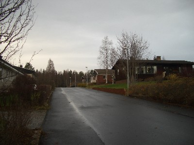
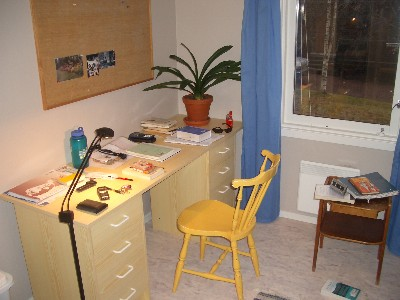
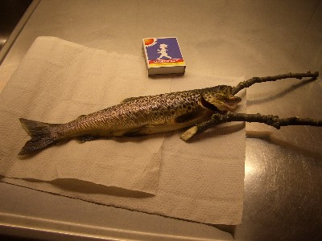
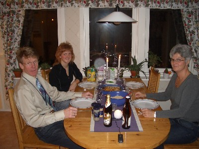
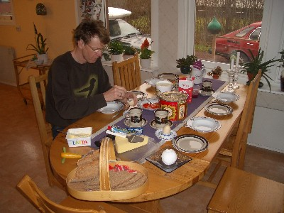
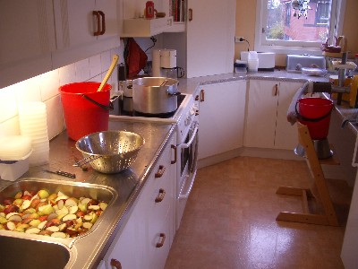

Home
Here is a not so good picture of my home in Sweden.
It is the one with the white porch on the right.

And here is my room...
What is for dinner?
Fish!(not really-there hasn't been that much fish so far.)
On the other hand, almost always there is meat, and that is often Älgkött, moose-meat.
A normal dinner.

And a fancy breakfast (on the weekends)

Finally, the kitchen on the scene of applesauce making, November 4.

That is it for now.